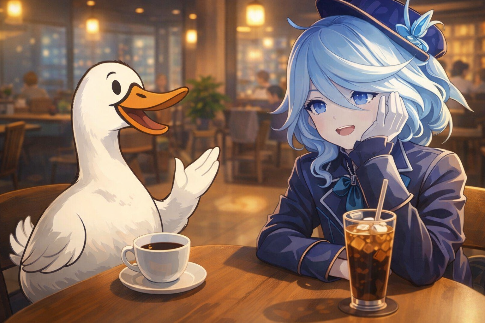
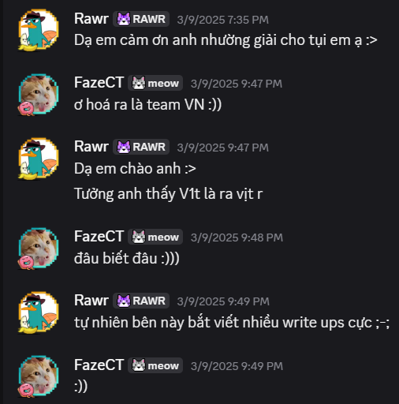

I took FazeCT pfp on dream hack ;-;
I’m a CTF beginner. I had only been playing CTFs for about 2–3 weeks, and honestly my results weren’t very good. Part of the reason was that I didn’t spend much time on CTFs. So that day, I decided to ask myself: what would happen if I seriously sat down and played one full CTF? And that CTF was VishwaCTF 2025.
My friend and I sat in a coffee shop and played from the afternoon until 11 PM before going home. We worked together quite well: I handled web + rev + pwn, while my friend Jaze played forensics + misc + OSINT. Everything was pretty fun, and in the end we reached top 16 — a very high position for us at that time.
However, the prizes weren’t meant for top 16 specifically:
text
For 6th – 15th place
i. PentesterLab License x1
ii. Real-World Bug Hunting E-book x1
A bit sad, but it was fine because we already had a really good time. Then the organizers announced that only teams who submitted write-ups would receive prizes. At that moment, a team named “FazeCT solo” did not submit their write-ups and gave up their slot for us.
We were extremely happy and immediately submitted our write-ups. Even though the prize wasn’t big, it was my first CTF prize ever, haha. We excitedly messaged him to say thank you and even invited him out for coffee

Unlike Jaze (who has been playing CTFs for almost 3 years), I had only been playing for 3 weeks, so I didn’t know anyone in the CTF or security community. I’m not even studying security as my major. So I just thought FazeCT was some random older guy, haha.
That day, we met in a very fancy-looking area. Jaze seemed a bit shy because he knew these were big names in the CTF/security scene, while I had no idea who they were at all (who the hell is he ;-;).
That day, we met FazeCT, Zayn, and Cocay. Only after that did I realize:
FazeCT is the leader of a top-tier CTF club at Bach Khoa, especially strong in reversing.
Zayn is a top crypto player at Bach Khoa.
Cocay is quiet, but clearly very skilled.
Bro… I had just started playing and already met the final bosses.
What was funny is that at the time, I thought they were just bragging to scare me, haha. Still, I’m very grateful to them for opening my eyes and sharing so many valuable pieces of advice.
At the time of writing this blog, I now know how insanely good they all are. But back then, I was just innocently sitting in a coffee shop with some random guys ;-;